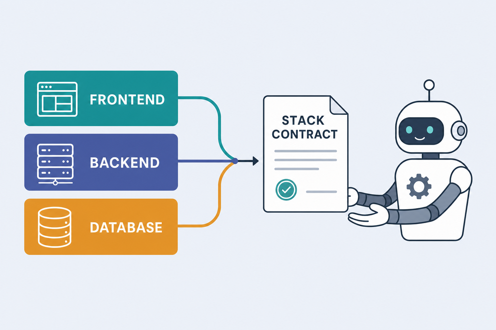
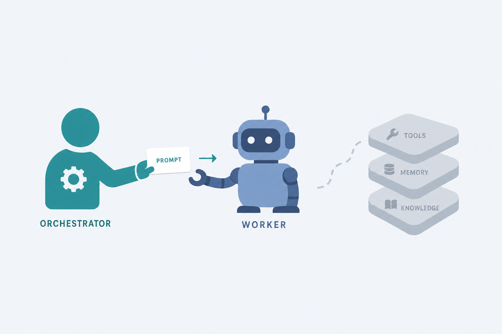
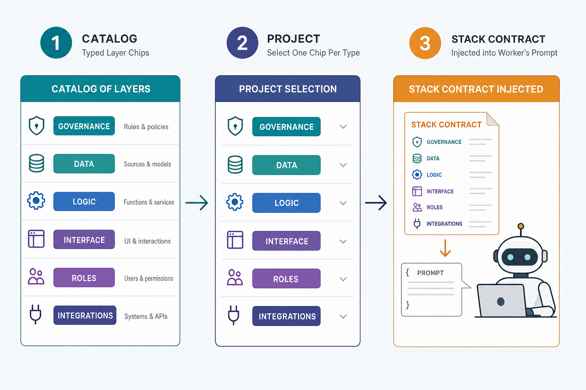
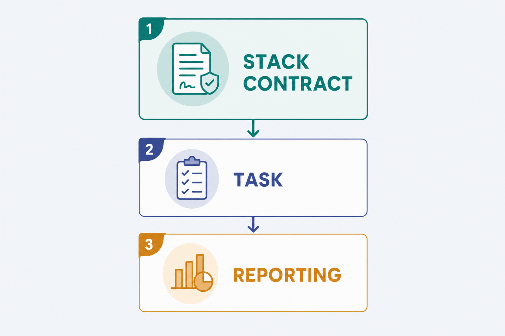
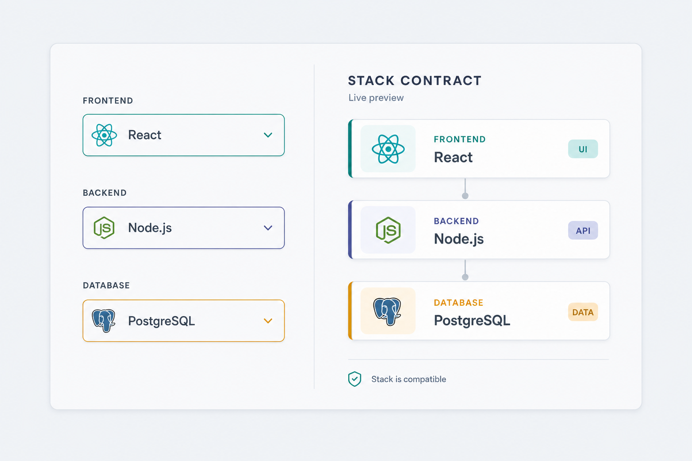

Stack Layers — CRUD, Mix & Match, and the Worker Stack Contract
Give the operator a managed catalog of typed tech-stack layers (frontend / backend / database), each carrying its own reasoning & guardrails. Compose a project from one layer per type (mix & match), then inject that composition — the stack contract — into every worker the orchestrator spawns, so a worker never builds in the wrong language and always focuses on the correct stack.

Purpose
Today a project's "stack" is a single auto-detected language string plus a flat capability map (commands). There is no operator-managed notion of composable, typed layers, no place to record why a layer was chosen or how to build within it, and — most importantly — none of that reaches the worker at spawn time. This plan introduces a first-class Stack Layers subsystem and wires its composed reasoning into the worker's persisted system prompt, exactly where it becomes load-bearing.
Repo; @spec on every public fn.src/; no inline server calls.numeric.A worker spawned for this project receives all three as a non-negotiable contract — "build only within these layers."
Problem
Three concrete gaps make workers drift off-stack:
- No CRUD, no typing, no reasoning. Per-stack knowledge lives in hard-coded module attributes (
Profiler.@markers,Capabilities.@defaults). The operator can't create/edit/delete layers, can't classify them by type (frontend/backend/database), and has nowhere to record the reasoning a worker should follow. - No composition. A real app is multiple layers at once (a Phoenix backend + a Svelte frontend + Postgres). The current model collapses a repo to one detected language, so "mix & match by type" is impossible.
- The worker is flying blind. The detected stack and
project.context_primerare injected into the orchestrator prompt and forge prompts — but never into a worker's prompt. The worker session opts carry no system-prompt channel; a worker's only durable charter is theagents.system_promptcolumn written once atcreate_agent/2(tools.ex:130), which today contains only the task body + a generic reporting clause. Nothing tells the worker which language/stack it must stay within.

Solution
A persisted, operator-CRUDable Stack Layers catalog; a project↔layer composition (mix & match, one per type); a pure contract renderer; and injection of that contract into both the worker (the load-bearing fix) and the orchestrator prompt.
| Piece | What it is | Where |
|---|---|---|
| Catalog | DB table of typed layers {layer_type, name, language, reasoning, enabled} — full CRUD. | stack_layers + RepoBuilder.StackLayers |
| Composition | Join table selecting layers per project (mix & match by type). | project_stack_layers |
| Contract renderer | Pure fn: project → a markdown "build ONLY within this stack" block (mirrors ContextPrimer.render/1). | StackLayers.Contract.render/1 |
| Worker injection ⭐ | Fold the contract into the persisted worker system_prompt at the one chokepoint every worker passes. | tools.ex:130 |
| Orchestrator injection | Surface the same contract in the orchestrator prompt so it frames tasks/worker-creation on-stack. | system_prompt.ex |
| Auto-seed | On register/refresh, pre-select layers matching the detected stack language (operator can re-mix). | projects.ex |
| UI | Settings → Stack Layers (catalog CRUD) + /projects/:id per-type picker. | console + projects LiveViews |

Relevant Files
Existing Files
- existing
lib/repo_builder/orchestrator/tools.ex— ⭐ worker-spawn chokepoint.create_agent/2line 130 writesparams["system_prompt"]viawith_reporting_clause/1;orchestrator_project_id/1is already computed at line 129. Inject the stack contract here. - existing
lib/repo_builder/orchestrator/system_prompt.ex—project_primer_block/1(line 228) interpolated at line 108. Add a siblingproject_stack_block/1. - existing
lib/repo_builder/projects/context_primer.ex— the canonical "typed data → markdown block" renderer to mirror for the contract. - existing
lib/repo_builder/projects.ex—profile_and_create/2(line ~89) +refresh_profile/1(line ~131): post-insert hooks to auto-seed a project's layer selection fromprofile.stack. - existing
lib/repo_builder/cost_center.ex— catalog CRUD pattern (upsert/update/delete+ key immutability) to mirror forStackLayers. - existing
lib/repo_builder_web/live/console_live.ex— settings-tab events +settings_tab/1router (line ~4039). Add the Stack Layers tab + CRUD events. - existing
lib/repo_builder_web/components/console_components.ex—price_catalog_table/1(line ~2100) + tab nav (line ~1287): clone for the layers catalog table/form. - existing
lib/repo_builder_web/live/projects_live.ex— mirror the worker-models roster card (built in the per-project-models work) for a per-type layer picker. - existing
priv/repo/seeds.exs— seed a starter layer catalog (or callStackLayers.seed_default_layers/0). - existing
ai_docs/agentic-layer-adaptor.md— document Stack Layers alongside Capabilities/Command-packs (and note: the contract is reasoning/guardrails; capabilities remain the command values).
New Files
- new
priv/repo/migrations/<ts>_create_stack_layers.exs— catalog table (binary_id PK, unique(layer_type, name)). - new
priv/repo/migrations/<ts>_create_project_stack_layers.exs— join table (two FKson_delete: :delete_all, unique(project_id, stack_layer_id), indexes). - new
lib/repo_builder/stack_layers/stack_layer.ex—StackLayerEcto schema (typed catalog row). - new
lib/repo_builder/stack_layers/project_stack_layer.ex— join schema. - new
lib/repo_builder/stack_layers.ex— context (the onlyRepocaller for both tables): catalog CRUD + per-project selection + grouped reads + auto-seed. - new
lib/repo_builder/stack_layers/contract.ex— purerender/1(project/layers → the stack-contract markdown block). - new
test/repo_builder/stack_layers_test.exs— CRUD, selection, contract render, language auto-seed. - new
test/repo_builder/orchestrator/worker_stack_contract_test.exs— ⭐ a spawned worker'ssystem_promptcarries the contract; none when no layers. - new
test/repo_builder_web/live/stack_layers_settings_test.exs— catalog CRUD via the settings tab. - new
test/repo_builder_web/live/project_stack_layers_test.exs— per-project mix & match + contract preview.
Implementation Phases
IMPORTANT: Execute every phase and task step by step, in order, top to bottom.
Status markers: [] idle · [wip] in progress · [x] complete · [f] failed. All start as []; the Build Plan workflow updates them as it works.
[] Phase 1: Data foundation — catalog + composition
Persist typed layers and the per-project selection, behind a single context. No UI, no injection yet — the seam everything else stands on.
1. Migrations
[]create_stack_layers: binary_id PK;layer_type :string null: false,name :string null: false,language :string null: false,reasoning :text,enabled :boolean default: true,source :string default: "seed", timestamps.create unique_index(:stack_layers, [:layer_type, :name]).[]create_project_stack_layers: binary_id PK;project_id references(:projects, type: :binary_id, on_delete: :delete_all);stack_layer_id references(:stack_layers, type: :binary_id, on_delete: :delete_all); timestamps. Index both FKs;create unique_index(:project_stack_layers, [:project_id, :stack_layer_id])(mirrorsproject_plugins).[]mix ecto.migrate && mix ecto.rollback && mix ecto.migrate— reversible.
2. Schemas
[]StackLayer(use RepoBuilder.Schema): hand-written@type t;@layer_types ~w(frontend backend database tooling)aasEcto.Enum;sourceenum[:seed, :manual];changeset/2casts all,validate_required([:layer_type, :name, :language]),unique_constraint([:layer_type, :name]).[]ProjectStackLayer:project_id/stack_layer_idbinary_id fields;changeset/2with bothforeign_key_constraints +unique_constraint([:project_id, :stack_layer_id]).
3. Context (only Repo caller)
[]Catalog CRUD:list_layers/0,list_layers_by_type/0(→%{type => [layer]}),get_layer/1,create_layer/1,update_layer/2,delete_layer/1— mirrorCostCentershapes, all@spec'd, tagged tuples.[]Per-project selection:layers_for_project/1(enabled layers, ordered by type),select_layer/2,deselect_layer/2,set_project_layers/2(replace the set),seed_project_from_stack/2(best-effort: select catalog layers whoselanguagematchesstack["language"]/build_tool, only when the project has no selection yet).[]seed_default_layers/0— idempotent starter catalog (Phoenix/Elixir, LiveView/Elixir, Svelte/TS, React/TS, FastAPI/Python, Node/JS, Go/Go, PostgreSQL/SQL, SQLite/SQL, Godot/GDScript) each with a one-paragraphreasoning.
4. Testing Strategy
ExUnit (DataCase, async: true): CRUD round-trips, unique-key rejection, per-project selection isolation, seed_project_from_stack language match, seed_default_layers idempotency.
[]mix test test/repo_builder/stack_layers_test.exs— CRUD + selection pass.[]mix compile --warnings-as-errors— clean.
[] Phase 2: The stack contract & its injection ⭐
The load-bearing phase: render the composition into a contract and put it where the worker actually reads it (its persisted system_prompt), and where the orchestrator can frame work on-stack.

1. Contract renderer
[]StackLayers.Contract.render/1— pure, mirrorsContextPrimer.render/1. Given a project id (ornil), readlayers_for_project/1and emit:
Return## Project stack — build ONLY within this stack - Backend: Phoenix (elixir) — <reasoning> - Frontend: Svelte (typescript) — <reasoning> - Database: PostgreSQL (sql) — <reasoning> Rules: - Use only the language/framework named for each layer; never introduce another for a listed layer. - If a task needs a layer not listed above, STOP and report back rather than guessing.""when the project isnilor has no layers (fully back-compatible).
2. Worker injection (the chokepoint)
[]Intools.ex create_agent/2, fold the contract into the persisted prompt at line 130, before the reporting clause so it leads the charter:
Result order in the storedproject_id = orchestrator_project_id(orchestrator_id) # ... "system_prompt" => args["system_prompt"] |> blank_to_nil() |> prepend_stack_contract(project_id) |> with_reporting_clause(), @spec prepend_stack_contract(String.t() | nil, Ecto.UUID.t() | nil) :: String.t() | nil defp prepend_stack_contract(prompt, project_id) do case StackLayers.Contract.render(project_id) do "" -> prompt contract when is_binary(prompt) -> contract <> "\n\n" <> prompt contract -> contract end endagents.system_prompt: contract → template/explicit body → reporting clause.[]Keep it drift-proof: every worker (template-based or ad-hoc) passes line 130, so no spawn path can bypass the contract.
3. Orchestrator injection
[]Insystem_prompt.ex, addproject_stack_block/1(resolve project via the existingresolve_project/1, returnContract.render(project.id)) and interpolate it next toproject_primer_block/1(~line 108) so the orchestrator sees the stack and creates the right workers.
4. Testing Strategy
ExUnit: spawn a worker via Tools.call("create_agent", …) for a project with a selected backend layer; read the persisted agents.system_prompt and assert it contains the contract header, the backend language, and the off-stack guardrail — and that a project with no layers yields no contract (just the reporting clause). Plus a pure render unit test and an orchestrator-prompt assertion.
[]mix test test/repo_builder/orchestrator/worker_stack_contract_test.exs— worker prompt carries the contract; absent when no layers.[]mix test test/repo_builder/stack_layers_test.exs—Contract.render/1content + empty cases.[]mix test --warnings-as-errors— no regression in existingtools/system_prompttests.
[] Phase 3: Catalog CRUD UI (Settings → Stack Layers)
Operator manages the layer catalog from the console, mirroring the Cost Center price catalog.
1. Settings tab + events
[]console_live.ex: add:stack_layerstosettings_tab/1; lazy-load layers when the tab opens; addsave_stack_layer(upsert/update viaediting_layer_id),edit_stack_layer,cancel_edit_stack_layer,delete_stack_layerevents (mirror the price-catalog events).[]mount assigns:stack_layer_rows,stack_layer_form(to_form/2),editing_layer_id.
2. Components
[]console_components.ex: add a<.settings_tab_button tab={:stack_layers} …/>, a:stack_layerspanel, and astack_layers_table/1(type pill, name, language, reasoning excerpt, Edit/Delete) + inline<.form phx-submit="save_stack_layer">with alayer_typeselect, name/language inputs, reasoning textarea.
3. Testing Strategy
Phoenix.LiveViewTest: open the tab, submit the form to create a layer, assert it persisted + renders; edit then delete.
[]mix test test/repo_builder_web/live/stack_layers_settings_test.exs— create/edit/delete via UI.[]mix format --check-formatted && mix credo --strict— style +@specgate.
[] Phase 4: Per-project mix & match + auto-seed
Compose a project's stack from the catalog by type, auto-seeded from detection, with a live contract preview — the operator's mix-and-match surface.

1. Auto-seed on profile
[]Inprojects.ex, after the project row exists inprofile_and_create/2andrefresh_profile/1, callStackLayers.seed_project_from_stack(project.id, profile.stack)(best-effort; never blocks registration; never clobbers an existing selection).
2. Project page card
[]projects_live.exshow: loadlist_layers_by_type/0+layers_for_project/1; render one<select>per type (options = layers of that type + "none"),phx-change="select_stack_layer"; show a read-only contract preview (Contract.render/1). Save viaselect_layer/2/deselect_layer/2; scoped to the project (noRepoin the LiveView). Mirror the worker-models roster card.
3. Docs + seed
[]CallStackLayers.seed_default_layers/0frompriv/repo/seeds.exs; document the subsystem inai_docs/agentic-layer-adaptor.md(contract = reasoning/guardrails injected at worker spawn; capabilities/command-packs unchanged).
4. Testing Strategy
Phoenix.LiveViewTest + context: select a layer per type on /projects/:id, assert layers_for_project/1 updates + the preview renders; register a project whose stack matches a seeded layer and assert auto-seed selected it; isolation between two projects.
[]mix test test/repo_builder_web/live/project_stack_layers_test.exs— mix & match + auto-seed + isolation.[]mix test --warnings-as-errors— full suite green.
Validation Commands
Execute these commands to validate the entire plan is complete:
[]mix ecto.migrate— both new tables apply cleanly.[]mix test test/repo_builder/stack_layers_test.exs— context CRUD + selection + contract render.[]mix test test/repo_builder/orchestrator/worker_stack_contract_test.exs— the worker prompt carries the contract.[]mix test test/repo_builder_web/live/stack_layers_settings_test.exs test/repo_builder_web/live/project_stack_layers_test.exs— both UIs.[]mix compile --warnings-as-errors— zero warnings.[]mix format --check-formatted— formatted.[]mix credo --strict—@specgate + style clean.[]mix test --warnings-as-errors— full suite green.[]mix dialyzer— no new warnings (keep existing skip filters).
Notes
How this relates to what already exists (and the previous plan)
Three stack-flavoured systems now coexist, with clean responsibilities:
{{TEST_COMMAND}} …) and the command bodies that consume them. Unchanged by this plan.This also supersedes the bespoke approach in specs/godot-elixir-command-pack-stack.html: "Godot + Elixir" becomes simply two catalog layers (a frontend Godot/GDScript engine layer + a backend Elixir layer) mixed on one project — no bespoke pack or detection heuristic required. Keep that plan as the command-prose reference; this one is the general mechanism.
Key design decisions (resolved here; revisit if needed)
- Join table over JSONB.
project_stack_layersgives referential integrity, "which projects use layer X" queries, and clean cascade — mirroringproject_plugins. JSONB on the project would duplicate ids and lose FK safety. - One pick per type in the UI, many allowed in the model. The schema permits multiple layers of a type (e.g. two databases); the picker offers one-per-type for simplicity. No artificial DB constraint blocks a future multi-select.
- Contract leads the worker charter. Order is contract → body → reporting clause, so the language guardrail is the first thing the worker reads. The reporting clause stays last (unchanged behaviour).
- Persisted-at-create, not per-turn. The contract lands in
agents.system_promptatcreate_agent(the only worker system-prompt channel — session opts carry none), so it travels across everycommand_agentturn for that worker's life. Re-mixing a project's layers affects future workers; existing workers keep the charter they were born with (document this; a "re-issue contract" action is possible future work). - Reasoning is worker-facing prose.
layer.reasoningis guidance/constraints written for the agent ("only Tailwind utility classes", "no raw SQL in contexts"), not internal notes — it is injected verbatim. - Layer type: enum, extensible. Start with
frontend|backend|database|tooling; adding a type is a one-line enum change. Open strings were rejected to keep the per-type UI grouping well-defined.
Edge cases & safety
- Platform orchestrator (
project_id: nil) or a project with no layers →Contract.render/1returns""; worker prompts are exactly today's (no regression). - Deleting a catalog layer cascades its
project_stack_layersrows (on_delete: :delete_all) — a project simply loses that selection; the contract re-renders without it. - A repo's own
.claude/commands/AGENTS.mdstill win for command bodies; the contract is additive guidance, never overriding repo-local truth. - Auto-seed is best-effort and idempotent — a missing matching layer just leaves the type unselected for the operator to fill.
Out of scope (clean follow-ups)
- Sourcing the project's capability commands from the selected backend layer (converging Capabilities into Stack Layers).
- A "re-issue contract to existing workers" action; per-layer version pinning; importing layers from a remote catalog.
- Enforcing the contract at tool-call time (e.g. blocking a file write in a disallowed language) — this plan is prompt-level guidance, not a hard sandbox.
Image generation
Image slots are placeholders. Filling them calls the GPT image API (billed, external) via uv run scripts/generate_gpt_image.py — run the planf3 Image Generation sub-workflow on request.
Amendments
No amendments yet — populated by the Update Plan / Update References workflows after first execution.